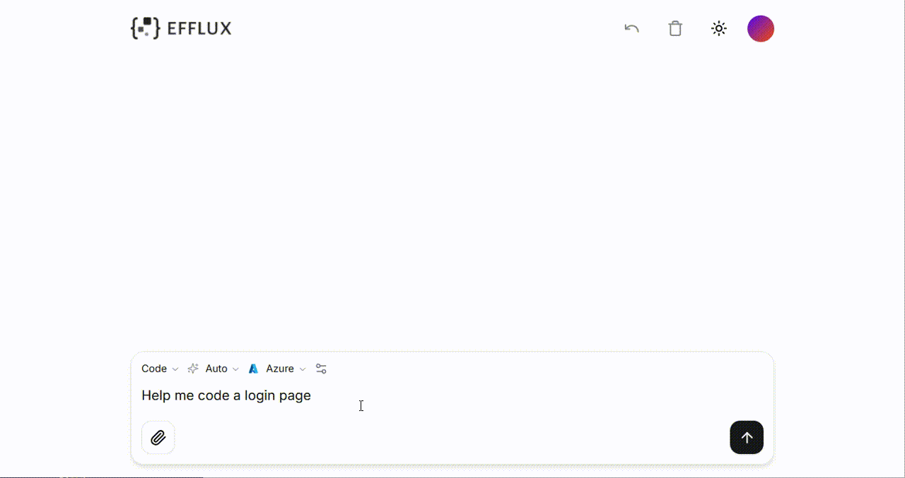

Welcome to Efflux Documentation
Efflux is an advanced, lightweight, and flexible framework designed for buiding your AI agents and interacting with multiple MCP (Model Context Protocol) servers. It provides seamless integration with various AI-powered large language models, enabling efficient data streaming and dynamic tool loading. With its modular architecture and user-friendly interface, Efflux simplifies the deployment and scaling of AI-driven applications.

In a nutshell, Efflux servers as:
-
an out-of-box chatbot featuring code generation.
-
an out-of-box MCP (Model Context Protocol) host to connect with your MCP servers, such as databases and functions, enabling standardized tool invocation and data access for large language models.
-
a hollistic framework to customize your own AI agents.
Features
The key features that Efflux offers include:
-
Rapid agent construction
-
Dynamic MCP tool loading and invocation
-
Support for multiple large language models
-
Real-time streaming chat responses
-
Chat history management
-
Dark/Light theme support